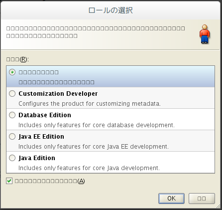
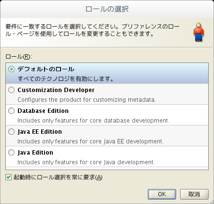

Table of Contents
1 環境
- OS: ArchLinux (Linux jizai 3.15.5-2-ARCH #1 SMP PREEMPT Fri Jul 11 07:56:02 CEST 2014 x86_64 GNU/Linux)
- DE: Gnome 3.12.2
- JDeveloper 11g Release 1 (11.1.1.3.0)
2 UnsatisfiedLinkError
Archlinux上で JDeveloper 11g インストール直後起動時に以下のようなエラーが起きて起動
ができない状態でした。
$ jdeveloper/jdev/bin/jdev Oracle JDeveloper 11g Release 1 (11.1.1.3.0) Copyright (c) 1997, 2010, Oracle and/or its affiliates. All rights reserved. java.lang.UnsatisfiedLinkError: /home/akira/Oracle/Jdev11.1.1.3.0/jdk160_18/jre/lib/i386/xawt/libmawt.so: libXtst.so.6: cannot open shared object file: No such file or directory at java.lang.ClassLoader$NativeLibrary.load(Native Method) at java.lang.ClassLoader.loadLibrary0(ClassLoader.java:1803) at java.lang.ClassLoader.loadLibrary(ClassLoader.java:1699) at java.lang.Runtime.load0(Runtime.java:770) at java.lang.System.load(System.java:1003) at java.lang.ClassLoader$NativeLibrary.load(Native Method) at java.lang.ClassLoader.loadLibrary0(ClassLoader.java:1803) at java.lang.ClassLoader.loadLibrary(ClassLoader.java:1720) at java.lang.Runtime.loadLibrary0(Runtime.java:823) at java.lang.System.loadLibrary(System.java:1028) at sun.security.action.LoadLibraryAction.run(LoadLibraryAction.java:50) at java.security.AccessController.doPrivileged(Native Method) at sun.awt.NativeLibLoader.loadLibraries(NativeLibLoader.java:38) at sun.awt.DebugHelper.<clinit>(DebugHelper.java:29) at java.awt.Component.<clinit>(Component.java:560) at oracle.ide.IdeCore.startupImpl(IdeCore.java:1156) at oracle.ide.Ide.startup(Ide.java:703) at oracle.ideimpl.DefaultIdeStarter.startIde(DefaultIdeStarter.java:35) at oracle.ideimpl.Main.start(Main.java:184) at oracle.ideimpl.Main.main(Main.java:146) at sun.reflect.NativeMethodAccessorImpl.invoke0(Native Method) at sun.reflect.NativeMethodAccessorImpl.invoke(NativeMethodAccessorImpl.java:39) at sun.reflect.DelegatingMethodAccessorImpl.invoke(DelegatingMethodAccessorImpl.java:25) at java.lang.reflect.Method.invoke(Method.java:597) at oracle.ide.boot.PCLMain.callMain(PCLMain.java:62) at oracle.ide.boot.PCLMain.main(PCLMain.java:54) at sun.reflect.NativeMethodAccessorImpl.invoke0(Native Method) at sun.reflect.NativeMethodAccessorImpl.invoke(NativeMethodAccessorImpl.java:39) at sun.reflect.DelegatingMethodAccessorImpl.invoke(DelegatingMethodAccessorImpl.java:25) at java.lang.reflect.Method.invoke(Method.java:597) at oracle.classloader.util.MainClass.invoke(MainClass.java:128) at oracle.ide.boot.IdeLauncher.bootClassLoadersAndMain(IdeLauncher.java:189) at oracle.ide.boot.IdeLauncher.launchImpl(IdeLauncher.java:89) at oracle.ide.boot.IdeLauncher.launch(IdeLauncher.java:65) at oracle.ide.boot.IdeLauncher.main(IdeLauncher.java:54) at sun.reflect.NativeMethodAccessorImpl.invoke0(Native Method) at sun.reflect.NativeMethodAccessorImpl.invoke(NativeMethodAccessorImpl.java:39) at sun.reflect.DelegatingMethodAccessorImpl.invoke(DelegatingMethodAccessorImpl.java:25) at java.lang.reflect.Method.invoke(Method.java:597) at oracle.ide.boot.Launcher.invokeMain(Launcher.java:713) at oracle.ide.boot.Launcher.launchImpl(Launcher.java:115) at oracle.ide.boot.Launcher.launch(Launcher.java:68) at oracle.ide.boot.Launcher.main(Launcher.java:57)
awt から利用している libXtst.so.6 シェアードライブラリが見つからないようなので
、 locate で確認したら libxtst パッケージがちゃんと入っている。32bit/64bitの問題だ
ろうなと思って、Archlinuxのパッケージリポジトリを検索したらやはり lib32-libxtst が
存在した、これをインストールしたらエラーが解消されました。
libXtst.so.6 ライブラリの確認
$ locate libXtst.so /usr/lib/libXtst.so /usr/lib/libXtst.so.6 /usr/lib/libXtst.so.6.1.0 $ pacman -Qo /usr/lib/libXtst.so.6 /usr/lib/libXtst.so.6 は libxtst 1.2.2-1 によって保有されています
lib32-libxtst をインストールする
★インストール $ sudo pacman -S lib32-libxtst [sudo] password for akira: 依存関係を解決しています... 相互衝突をチェックしています... パッケージ (1): lib32-libxtst-1.2.2-1 Total Download Size: 0.01 MiB Total Installed Size: 0.02 MiB :: インストールを行いますか？ [Y/n] :: パッケージを取得します ... lib32-libxtst-1.2.2-1-x86_64 9.0 KiB 44.4K/s 00:00 [############################################################################] 100% (1/1) キーリングのキーを確認 [############################################################################] 100% (1/1) パッケージの整合性をチェック [############################################################################] 100% (1/1) パッケージファイルのロード [############################################################################] 100% (1/1) ファイルの衝突をチェック [############################################################################] 100% (1/1) 空き容量を確認 [############################################################################] 100% (1/1) インストール lib32-libxtst [############################################################################] 100% ★確認 $ pacman -Ql lib32-libxtst lib32-libxtst /usr/ lib32-libxtst /usr/lib32/ lib32-libxtst /usr/lib32/libXtst.so lib32-libxtst /usr/lib32/libXtst.so.6 lib32-libxtst /usr/lib32/libXtst.so.6.1.0 lib32-libxtst /usr/lib32/pkgconfig/ lib32-libxtst /usr/lib32/pkgconfig/xtst.pc lib32-libxtst /usr/share/ lib32-libxtst /usr/share/licenses/ lib32-libxtst /usr/share/licenses/lib32-libxtst $
3 文字化け
起動したら日本語が例の豆腐形状となっていました。JdevにバンドされたJDKの
Jdev11.1.1.3.0/jdk160_18/jre/lib/fonts の配下に fallback ディレクトリを作成し、日
本語フォントへのシンボルリンクを貼っておく。また、起動オプションにフォントのアンチエ
イリアス (anti-aliasing)を有効にしておくとよいでしょう。
起動時の豆腐状

fallbackフォントの設定を実施する
★fallbackフォントの指定 $ cd ~/Oracle/Jdev11.1.1.3.0/jdk160_18/jre/lib/fonts $ mkdir fallback; cd fallback $ ln -s /usr/share/fonts/TTF/VL-Gothic-Regular.ttf VL-Gothic-Regular.ttf $ ln -s /usr/share/fonts/TTF/VL-PGothic-Regular.ttf VL-PGothic-Regular.ttf ★起動オプション設定 $ export _JAVA_OPTIONS="-Dawt.useSystemAAFontSettings=on -Dswing.aatext=true" $ cd ~/Oracle/Jdev11.1.1.3.0/ $ jdeveloper/jdev/bin/jdev Oracle JDeveloper 11g Release 1 (11.1.1.3.0) Copyright (c) 1997, 2010, Oracle and/or its affiliates. All rights reserved. Picked up _JAVA_OPTIONS: -Dawt.useSystemAAFontSettings=on -Dswing.aatext=true

もう一度起動してみたら、ばっちりだね。
4 メニューバーの動作不具合
JDeveloper起動後、ウィンドウを最大化した状態でメニューバーの操作がうまくできない問題 がある。詳細な原因がよくわからない、GTKウィンドウマネージャとうまく連携出来ていない気 がする。とりあえず、ウィンドウを最大化せずに問題から逃げた。
5 ランチャーから起動できるようにする
ランチャー起動できるように ~/.local/share/applications/jdev.desktop ファイルを作成
しておく。
[Desktop Entry] Name=JDeveloper Exec=/home/akira/Oracle/Jdev11.1.1.3.0/jdeveloper/jdev/bin/jdev Icon=/home/akira/Oracle/Jdev11.1.1.3.0/jdeveloper/jdev/bin/coffee.png StartupNotify=true Terminal=false Type=Application Categories=Development;Java;
6 未解決問題
- フォントが醜い
- GTKLookAndFeelが使えない